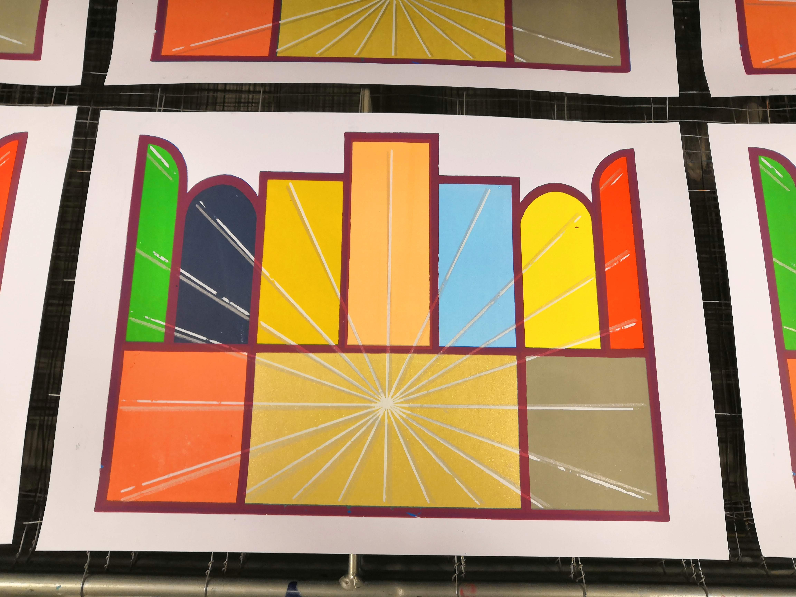

naar puzzel 'Remember' van art'quadrat, zeefdruk, A3, 2020
Johan Andriessen
het zeefdruk atelier in de academie van Wilrijk
mijn werken in de academie:
mijn eerste kunstopleiding die ik volgde was de richting 'textiele kunst' in het Gele Huis in Wilrijk, een filiaal van de academie van Antwerpen (Kaska). ik ben hiermee begonnen in het schooljaar 2011-2012 en heb dit 3 jaar gevolgd.
in het schooljaar 2014-2015 ben ik dan begonnen in de academie van Wilrijk in de richting 'Kunstlab' monumentale kunst. ook dit heb ik 3 jaar gevolgd.
daarna vanaf het schooljaar 2017-2018 ben ik overgeschakeld naar de richting Zeefdruk, ook in de academie van Wilrijk.
werken zeefdruk:
schooljaar 2017-2018: 1 ste jaar:
naar Paul Van Hoeydonck , naar Guy Vandenbranden, zeefdruk, 36x27cm, 2017
compositie met fietsketting, zeefdruk, A4, 2018
aalscholver en komodo-varaan, zeefdruk, A3, 2018
planometrie, drieluik, zeefdruk, 3 x A3, 2018
schooljaar 2018-2019: 2 de jaar:
naar 'de grote golf van Kanagawa' van Hokusai, zeefdruk, A3, 2018
fractal, drakencurve, zeefdruk, 2 x A3, 2018
fractal, Sierpinski-spons, zeefdruk, 2 x A2, 2019
kasteel van Chambord, waterzuiveringsinstallatie, zeefdruk, A2 en A3, 2019
schooljaar 2019-2020: 2 de jaar bis:
1-punts-perspectief, 2-punts-perspectief, zeefdruk, 2 x A3, 2019
Nespresso, drieluik, zeefdruk, 3 x A2, 2020
naar Victor Vasarely, zeefdruk, A3, 2020
zeefdruk +
schooljaar 2020-2021: 1 ste jaar:
naar puzzel 'Remember' van art'quadrat, zeefdruk, A3, 2020

naar het Lam Gods van Van Eyck, zeefdruk, A3, 2020
naar 3d chinees puzzelstukje, drieluik, zeefdruk, 3 x A3, 2021
symbolen, zeefdruk, A3, 2021
zwarte vogels, zeefdruk, A3, 2021

Zentangle, variaties, zeefdruk, A3, 2021
schooljaar 2021-2022: 2 de jaar:
resultaat van 25 werkjes met als thema 'dieren en geometrie', zeefdruk, 25st van 20x20cm, 2021-2022
schooljaar 2022-2023: 2 de jaar bis:


Pentaptiek , vijfluik met als thema 'klimaat, oorlog, kolonisatie, migratie, europa', zeefdruk, 5 x A3, 2022-2023